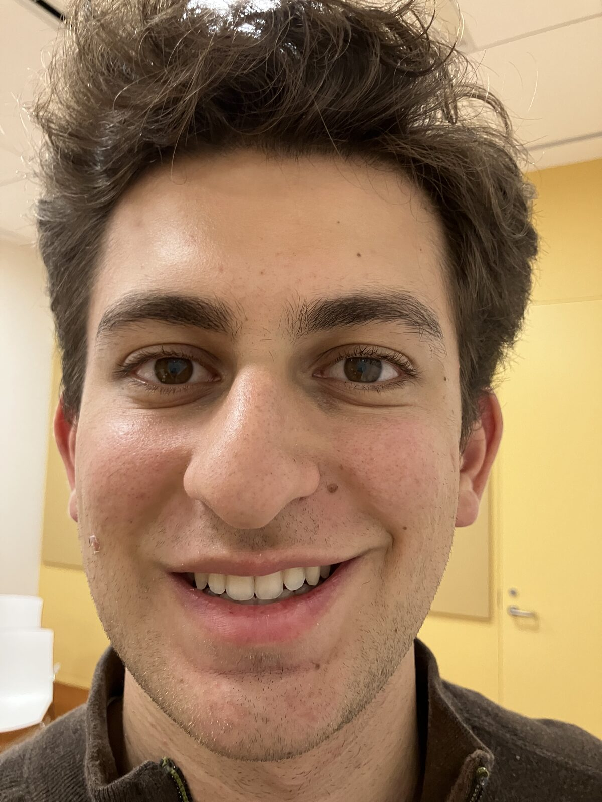
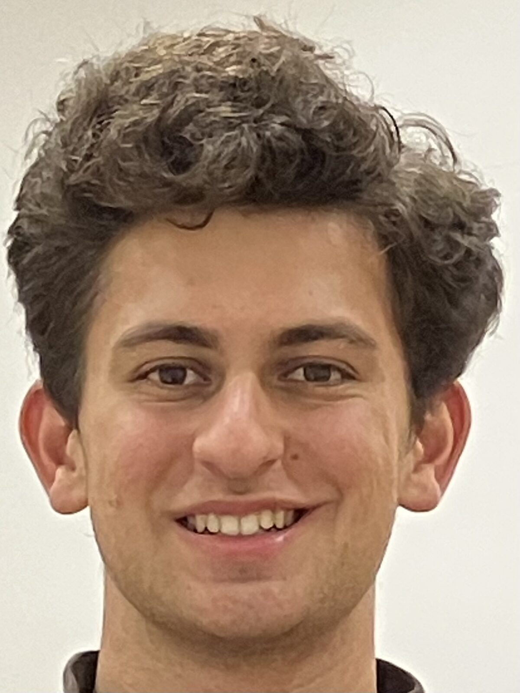
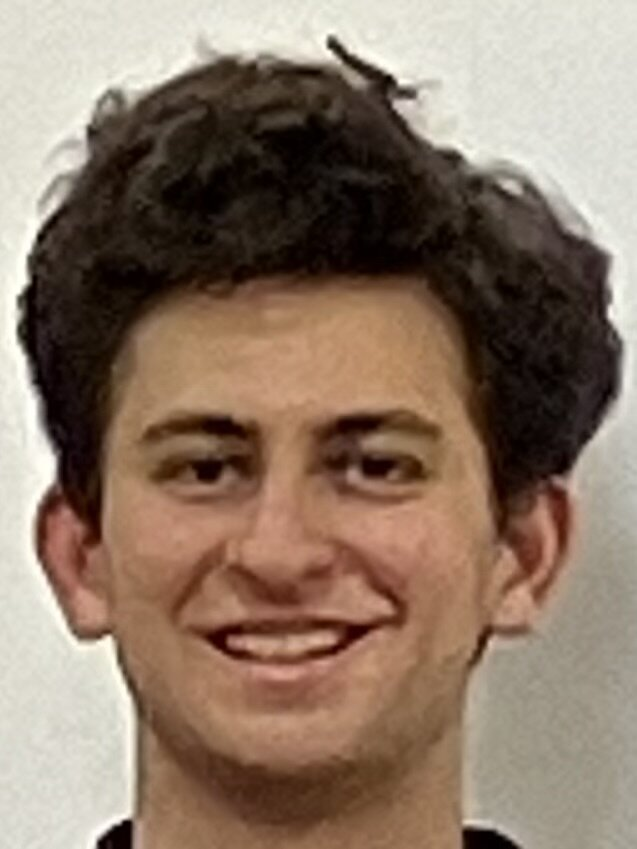
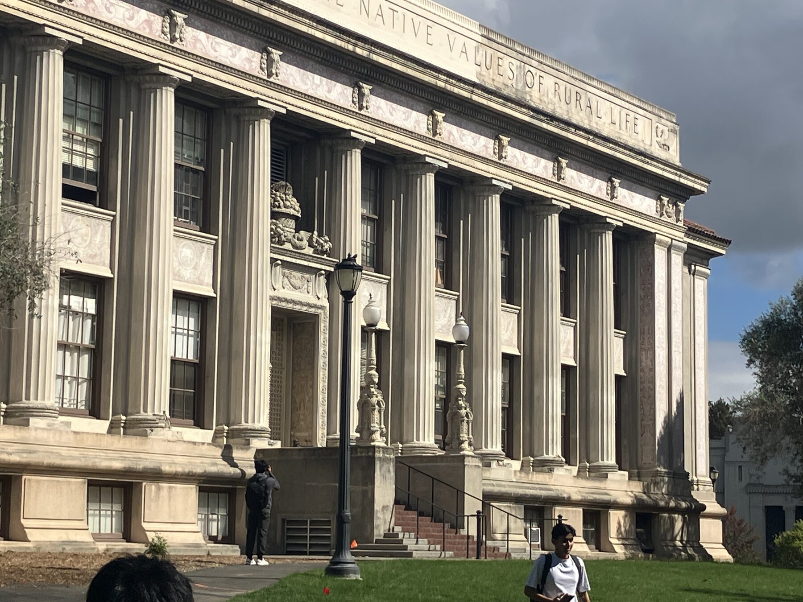
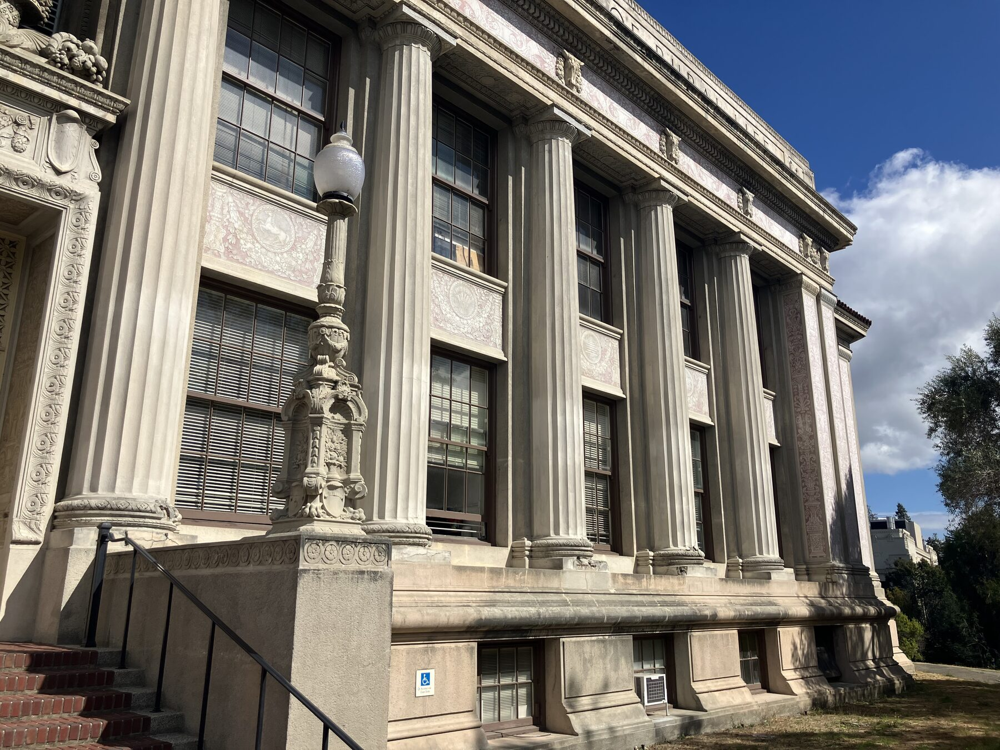
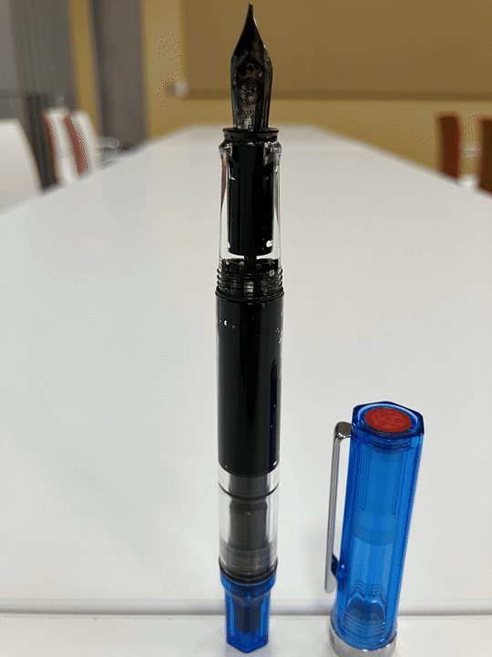

CS180 · Intro to Computer Vision & Computational Photography · Fall 2026
Becoming friends with my camera
Three small experiments in perspective — how focal length and where you stand reshape a photograph before you ever press the shutter.
Part 01 · Portrait distance
The selfie, three ways
Three portraits, one face, one framing. The first is shot from arm's length. For the second I stepped back several feet and zoomed in until the face filled the frame again — and for the third, way back, at full zoom.



Observations
Up close, the camera exaggerates whatever sits nearest to it — usually the nose. At arm's length my nose is a lot closer to the lens than my ears are, so it projects disproportionately large and the whole face bulges forward. Stepping back evens out those relative distances — nose and ears become almost equidistant from the camera — and zooming in simply restores the framing. The glass never changed the geometry; the distance did. What reads as a "flattering lens" is really a flattering camera position. Pushing even further back (fig. 1c) continues the trend — the features flatten almost completely, and the background seems to press right up behind me.
Part 02 · Perspective compression
The long lens flattens
One building with a receding façade, photographed twice: from far away with the lens zoomed in, then from up close with no zoom — walking forward until the building takes up the same room in the frame.


Observations
In the telephoto view the façade looks flattened — planes that sit meters apart stack almost onto one another. From far away, the near and far ends of the building are nearly the same distance from the camera in relative terms, so they project at nearly the same scale and the depth between them collapses. Up close the ratio flips: the nearest column is a few meters off while the farthest is many times that, so scale falls away steeply and the perspective lines dive toward their vanishing point. Same building, same framing — the only thing that moved was me.
Part 03 · The vertigo effect
The dolly zoom
Hitchcock's trick. Dolly the camera backward while zooming in, holding the subject at a constant size — the subject stays still while the world stretches away behind them.
- 01Pick a scene with real depth behind the subject
- 02Step backward as you zoom in
- 03Keep the subject the same size in every frame
- 04Stitch the stills into a looping GIF

Observations
The subject is a fountain pen standing on a desk. I shot 26 stills, zooming out and then back in while moving the camera to hold the pen at a constant size, and stitched them into a GIF — since the sequence ends where it began, it loops seamlessly. The pen barely flinches, but the room behind it breathes: the background swells and compresses as the effective focal length changes. The surprise was how robust the illusion is — even a handheld, imperfect pull reads as vertigo once the subject's size is pinned.